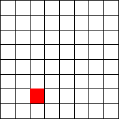
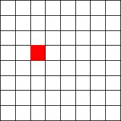
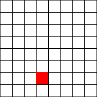
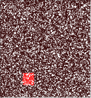
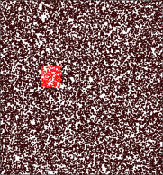
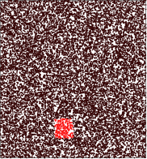
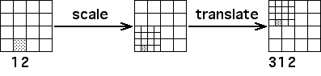
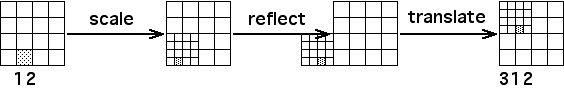

|  |  |  | ||
|  |  |  | ||
| 123 | 312 | 124 |
| That address 123 gives the same region in problems 1 and 2 may be a bit of a surprise, because T3 is different in problems 1 and 2. |
| However, notice that in both problems |
|
| and |
|
| so T1(T2(T3(S))) is the same in both problems 1 and 2. |
| To compare the regions with address 312, view the tranformations T3 as made of their respective components. |
| In problem 1, T3 is made of scale and translate. |
|  |
| In problem 2, T3 is made of scale, reflect, and translate. |
|  |
| That address 124 gives the same region in problems 1 and 2 is no surprise. |
| Transformations 1, 2, and 4 are the same in both problems, so the function T1(T2(T4)) is the same in problems 1 and 2. |
Return to Exercise 2.